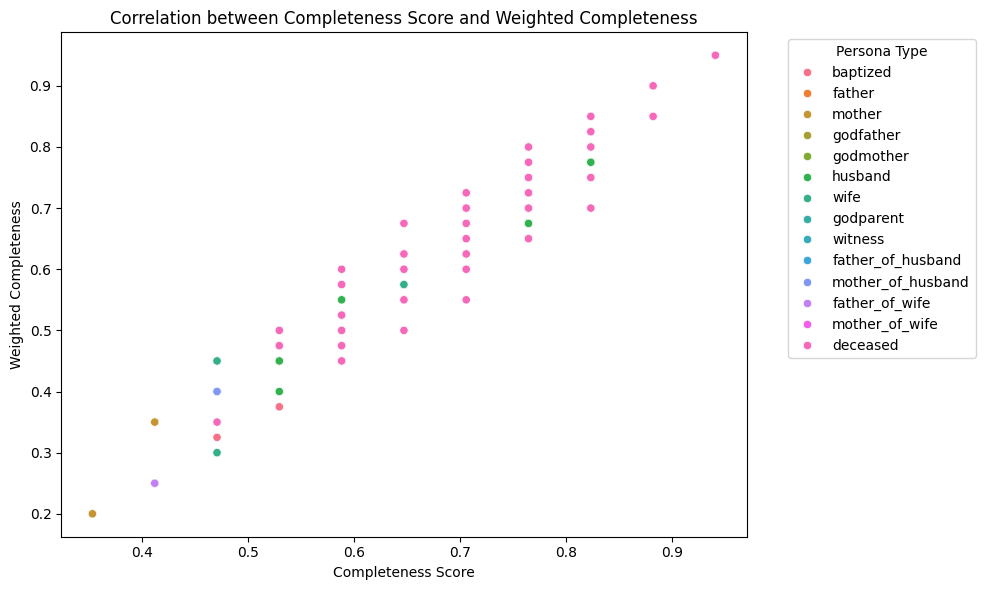

import pandas as pd
from actions.extractors import PersonaPersonas Creation
Our approach aligns closely with the input preparation model proposed by David W. Embley (2021). We structure our data around personas, defined as “each mention instance of a person in a document” (p. 66), as a foundational step toward probabilistic record linkage (PRL). Each persona is created by ingesting available individual metadata (such as name, last name, birth date), associating the person with a sacramental event (baptism, marriage, or burial). The relationship between personas is established by their participation at the event (e.g., as father, mother, godfather, witness).
Personas Data Structure
The personas data structure is very straightforward:
- event_idno: unique semantically meaningful identifier for the event
- persona_idno: unique semantically meaningful identifier for the persona
- persona_type: role of the persona in the event (e.g., baptized, father, mother, witness)
- name: first name of the persona
- last_name: last name of the persona
- birth_date: birth date of the persona
- birth_place: birth place of the persona
- resident_in: persona residence at the time of the event
- gender: inferred gender of the persona
- social_condition: harmonized social condition of the persona
- legitimacy_status: harmonized legitimacy status of the persona
- marital_status: harmonized marital status of the persona
Identification of individuals is done by parsing one or a list of dataframes with the clean data, and processing the data using the Persona class. Results are stored in data/interim/personas_extracted.csv for testing, and in data/clean/personas.csv for production.
Data Extraction
We begin by loading the cleaned sacramental records and extracting persona instances using the PersonaExtractor class. This process creates individual persona records for each person mentioned in the historical documents, preserving their role in each event.
bautismos = pd.read_csv("../data/clean/bautismos_clean.csv")
entierros = pd.read_csv("../data/clean/entierros_clean.csv")
matrimonios = pd.read_csv("../data/clean/matrimonios_clean.csv")extractor = Persona.PersonaExtractor([bautismos, matrimonios, entierros])
personas = extractor.extract_personas()
personas.describe(include='all')| event_idno | original_identifier | persona_type | name | birth_place | birth_date | legitimacy_status | lastname | persona_idno | social_condition | marital_status | resident_in | death_place | death_date | gender | |
|---|---|---|---|---|---|---|---|---|---|---|---|---|---|---|---|
| count | 47072 | 47072 | 47072 | 46999 | 5378 | 8596 | 11866 | 46762 | 47072 | 9643 | 4275 | 925 | 1513 | 2114 | 47072 |
| unique | 10180 | 10179 | 14 | 4286 | 53 | 7001 | 2 | 2616 | 47072 | 7 | 3 | 19 | 7 | 1813 | 6 |
| top | matrimonio-490 | APAucará-LM-L001_M490 | mother | mariano | pampamarca | 1901-09-04 | legitimo | quispe | persona-1 | indio | soltero | pampamarca | aucará | 1871-11-04 | male |
| freq | 12 | 12 | 7614 | 1556 | 1919 | 8 | 9104 | 2712 | 1 | 5654 | 2779 | 292 | 1016 | 7 | 20150 |
Initial Exploration
Before conducting detailed quality assessment, we examine the basic structure and distribution of persona types in the extracted dataset.
personas.to_csv("../data/clean/personas.csv", index=False)personas.info()<class 'pandas.core.frame.DataFrame'>
RangeIndex: 47072 entries, 0 to 47071
Data columns (total 15 columns):
# Column Non-Null Count Dtype
--- ------ -------------- -----
0 event_idno 47072 non-null object
1 original_identifier 47072 non-null object
2 persona_type 47072 non-null object
3 name 46999 non-null object
4 birth_place 5378 non-null object
5 birth_date 8596 non-null object
6 legitimacy_status 11866 non-null object
7 lastname 46762 non-null object
8 persona_idno 47072 non-null object
9 social_condition 9643 non-null object
10 marital_status 4275 non-null object
11 resident_in 925 non-null object
12 death_place 1513 non-null object
13 death_date 2114 non-null object
14 gender 47072 non-null object
dtypes: object(15)
memory usage: 5.4+ MBQuality Assessment
To evaluate the suitability of the extracted personas for probabilistic record linkage, we assess data completeness across multiple dimensions: names, parental linkages, temporal information, spatial attributes, and social/legal status markers.
Names are critical identifiers for record linkage. We assess the completeness of both first names and surnames across all persona types.
Name Completeness
name_completeness = personas.loc[(personas['name'].isna()) | (personas['lastname'].isna())]
name_completeness.info()<class 'pandas.core.frame.DataFrame'>
Index: 383 entries, 62 to 46928
Data columns (total 15 columns):
# Column Non-Null Count Dtype
--- ------ -------------- -----
0 event_idno 383 non-null object
1 original_identifier 383 non-null object
2 persona_type 383 non-null object
3 name 310 non-null object
4 birth_place 35 non-null object
5 birth_date 52 non-null object
6 legitimacy_status 41 non-null object
7 lastname 73 non-null object
8 persona_idno 383 non-null object
9 social_condition 55 non-null object
10 marital_status 20 non-null object
11 resident_in 0 non-null object
12 death_place 26 non-null object
13 death_date 53 non-null object
14 gender 383 non-null object
dtypes: object(15)
memory usage: 47.9+ KBname_completeness['persona_type'].value_counts()persona_type
mother 83
deceased 53
father_of_husband 45
father_of_wife 45
father 44
godmother 27
godfather 25
godparent 13
wife 13
witness 10
husband 9
mother_of_wife 7
mother_of_husband 5
baptized 4
Name: count, dtype: int64# Percentage of missing names
total_personas = len(personas)
missing_names = len(name_completeness)
percentage_missing_names = (missing_names / total_personas) * 100
print(f"Percentage of personas with missing names: {percentage_missing_names:.2f}%")Percentage of personas with missing names: 0.81%missing_firstnames = personas.loc[personas['name'].isna()]
percentage_missing_firstnames = (len(missing_firstnames) / total_personas) * 100
print(f"Percentage of personas with missing firstnames: {percentage_missing_firstnames:.2f}%")Percentage of personas with missing firstnames: 0.16%missing_surnames = personas.loc[personas['lastname'].isna()]
percentage_missing_surnames = (len(missing_surnames) / total_personas) * 100
print(f"Percentage of personas with missing lastnames: {percentage_missing_surnames:.2f}%")Percentage of personas with missing lastnames: 0.66%Parental Linkage Completeness
For personas identified as children (baptized, deceased children, etc.), we assess whether their parents are properly linked in the dataset. The expectation differs by legitimacy status: legitimate children should have both parents recorded, while illegitimate children require at least one parent.
legitimate_sons = personas.loc[personas['legitimacy_status'] == 'legitimo']
ilegitimate_sons = personas.loc[personas['legitimacy_status'] == 'ilegitimo']
sons_types = legitimate_sons['persona_type'].unique().tolist()
# filter ilegitimate sons by sons types to avoid including other ilegitimate personas
ilegitimate_sons = ilegitimate_sons.loc[ilegitimate_sons['persona_type'].isin(sons_types)]
print("Legitimate Sons Persona Types and Counts:")
print(legitimate_sons['persona_type'].value_counts())
print("\nIlegitimate Sons Persona Types and Counts:")
print(ilegitimate_sons['persona_type'].value_counts())Legitimate Sons Persona Types and Counts:
persona_type
baptized 5483
wife 1267
husband 1248
deceased 1106
Name: count, dtype: int64
Ilegitimate Sons Persona Types and Counts:
persona_type
baptized 810
deceased 201
wife 170
husband 165
Name: count, dtype: int64def check_parents_completeness(sons_df, personas_df, legitimacy='leg'):
# Get unique event_idno from sons
event_ids = sons_df['event_idno'].unique()
# Filter personas to only relevant events
relevant_personas = personas_df[personas_df['event_idno'].isin(event_ids)]
# Check for father and mother presence by event
events_with_father = set(relevant_personas[relevant_personas['persona_type'].str.contains('father', na=False)]['event_idno'])
events_with_mother = set(relevant_personas[relevant_personas['persona_type'].str.contains('mother', na=False)]['event_idno'])
if legitimacy == 'leg':
# For legitimate sons, both parents should be present
# Incomplete if missing father OR missing mother
events_missing_father = set(event_ids) - events_with_father
events_missing_mother = set(event_ids) - events_with_mother
incomplete_events = events_missing_father | events_missing_mother
elif legitimacy == 'ileg':
# For illegitimate sons, at least one parent should be present
# Incomplete if missing BOTH father AND mother
incomplete_events = set(event_ids) - events_with_father - events_with_mother
else:
raise ValueError("Legitimacy must be 'leg' or 'ileg'")
# Get sons with incomplete parents
incomplete_sons = sons_df[sons_df['event_idno'].isin(incomplete_events)]
return incomplete_sons
incomplete_legit_parents = check_parents_completeness(legitimate_sons, personas)
incomplete_ilegit_parents = check_parents_completeness(ilegitimate_sons, personas, legitimacy='ileg')
print(f"Number of legitimate sons with incomplete parents: {len(incomplete_legit_parents)}")
print(f"Number of ilegitimate sons with incomplete parents: {len(incomplete_ilegit_parents)}")Number of legitimate sons with incomplete parents: 42
Number of ilegitimate sons with incomplete parents: 9The results show excellent parental linkage quality:
- Legitimate personas (9,110 total): Only 0.46% (42 cases) have incomplete parental records
- Illegitimate personas (1,310 total): Only 0.68% (9 cases) lack at least one parent
This high completeness rate indicates that the extraction process successfully preserved family relationships recorded in the sacramental registers.
Temporal Completeness
We assess the availability of birth and death dates, which are essential for temporal reasoning in record linkage.
nobirthdate = personas.loc[personas['birth_date'].isna()]
personas_size = len(personas)
nobirthdate_size = len(nobirthdate)
percentage_nobirthdate = (nobirthdate_size / personas_size) * 100
print(f"Percentage of personas with missing birth dates: {percentage_nobirthdate:.2f}%")
nobirthdate['persona_type'].value_counts()Percentage of personas with missing birth dates: 81.74%persona_type
mother 7614
father 7369
witness 4249
godparent 3260
godmother 3251
godfather 3012
wife 1470
mother_of_wife 1459
husband 1441
mother_of_husband 1439
father_of_wife 1438
father_of_husband 1410
baptized 978
deceased 86
Name: count, dtype: int64nodeathdate = personas.loc[personas['death_date'].isna()]
nodeathdate_size = len(nodeathdate)
percentage_nodeathdate = (nodeathdate_size / personas_size) * 100
print(f"Percentage of personas with missing death dates: {percentage_nodeathdate:.2f}%")
nodeathdate['persona_type'].value_counts()Percentage of personas with missing death dates: 95.51%persona_type
mother 7614
father 7369
baptized 6340
witness 4249
godparent 3260
godmother 3251
godfather 3012
wife 2060
husband 2051
mother_of_wife 1459
mother_of_husband 1439
father_of_wife 1438
father_of_husband 1410
deceased 6
Name: count, dtype: int64Spatial Completeness
Birth and death places provide geographic context for mobility analysis and help disambiguate between individuals with similar names.
nonbirthplace = personas.loc[personas['birth_place'].isna()]
nonbirthplace_size = len(nonbirthplace)
percentage_nonbirthplace = (nonbirthplace_size / personas_size) * 100
print(f"Percentage of personas with missing birth places: {percentage_nonbirthplace:.2f}%")
nonbirthplace['persona_type'].value_counts()Percentage of personas with missing birth places: 88.57%persona_type
mother 7614
father 7369
baptized 4532
witness 4249
godparent 3260
godmother 3251
godfather 3012
mother_of_wife 1459
mother_of_husband 1439
father_of_wife 1438
father_of_husband 1410
wife 1154
husband 1114
deceased 393
Name: count, dtype: int64nodeathplace = personas.loc[personas['death_place'].isna()]
nodeathplace_size = len(nodeathplace)
percentage_nodeathplace = (nodeathplace_size / personas_size) * 100
print(f"Percentage of personas with missing death places: {percentage_nodeathplace:.2f}%")
nodeathplace['persona_type'].value_counts()Percentage of personas with missing death places: 96.79%persona_type
mother 7614
father 7369
baptized 6340
witness 4249
godparent 3260
godmother 3251
godfather 3012
wife 2060
husband 2051
mother_of_wife 1459
mother_of_husband 1439
father_of_wife 1438
father_of_husband 1410
deceased 607
Name: count, dtype: int64# personas with both birth and death places present
birth_and_death_places = personas.loc[personas['birth_place'].notna() & personas['death_place'].notna()]
birth_and_death_places_size = len(birth_and_death_places)
percentage_birth_and_death_places = (birth_and_death_places_size / personas_size) * 100
print(f"Percentage of personas with both birth and death places present: {percentage_birth_and_death_places:.2f}%")
birth_and_death_places['persona_type'].value_counts()Percentage of personas with both birth and death places present: 2.59%persona_type
deceased 1219
Name: count, dtype: int64Attribute Completeness
We examine the completeness of harmonized social and legal status attributes (legitimacy, marital status, social condition), which provide contextual information that can strengthen or weaken linkage hypotheses.
legitimacy_missing = personas.loc[personas['legitimacy_status'].isna()]
legitimacy_missing_size = len(legitimacy_missing)
percentage_legitimacy_missing = (legitimacy_missing_size / personas_size) * 100
print(f"Percentage of personas with missing legitimacy status: {percentage_legitimacy_missing:.2f}%")
legitimacy_missing['persona_type'].value_counts()Percentage of personas with missing legitimacy status: 74.79%persona_type
mother 7608
father 7365
witness 4249
godparent 3258
godmother 3248
godfather 3008
mother_of_wife 1113
father_of_wife 1093
mother_of_husband 1085
father_of_husband 1058
deceased 813
husband 638
wife 623
baptized 47
Name: count, dtype: int64marital_status_missing = personas.loc[personas['marital_status'].isna()]
marital_status_missing_size = len(marital_status_missing)
percentage_marital_status_missing = (marital_status_missing_size / personas_size) * 100
print(f"Percentage of personas with missing marital status: {percentage_marital_status_missing:.2f}%")
marital_status_missing['persona_type'].value_counts()Percentage of personas with missing marital status: 90.92%persona_type
mother 7550
father 7362
baptized 6340
witness 4249
godmother 3250
godparent 3241
godfather 3011
mother_of_wife 1459
mother_of_husband 1438
father_of_wife 1438
father_of_husband 1410
deceased 917
wife 586
husband 546
Name: count, dtype: int64social_condition_missing = personas.loc[personas['social_condition'].isna()]
social_condition_missing_size = len(social_condition_missing)
percentage_social_condition_missing = (social_condition_missing_size / personas_size) * 100
print(f"Percentage of personas with missing social condition: {percentage_social_condition_missing:.2f}%")
social_condition_missing['persona_type'].value_counts()Percentage of personas with missing social condition: 79.51%persona_type
mother 6715
father 6564
baptized 4338
witness 4249
godparent 2967
godfather 2922
godmother 2901
wife 1196
husband 1145
mother_of_wife 955
father_of_wife 938
mother_of_husband 938
father_of_husband 917
deceased 684
Name: count, dtype: int64Aggregate Completeness Metrics
Beyond individual field completeness, we calculate overall completeness scores to understand the general quality of persona records. We compute both a simple completeness score (proportion of non-null fields) and a weighted score that prioritizes critical fields for record linkage.
Simple Completeness Score
The simple score treats all fields equally, providing a general measure of data richness.
personas['completeness_score'] = personas.notna().sum(axis=1) / len(personas.columns)
personas.groupby('persona_type')['completeness_score'].mean().sort_values(ascending=False)persona_type
deceased 0.821415
husband 0.656038
wife 0.651748
baptized 0.629243
mother_of_husband 0.506092
mother_of_wife 0.505186
father_of_husband 0.504492
father_of_wife 0.503755
mother 0.474424
father 0.473651
godmother 0.473372
godparent 0.472822
godfather 0.468216
witness 0.466510
Name: completeness_score, dtype: float64Weighted Completeness Score
The weighted score assigns higher importance to fields crucial for record linkage (names, dates) and lower weights to supplementary attributes (social condition, residence). This reflects the differential utility of fields in matching algorithms.
weights = {
'name': 0.15,
'lastname': 0.15,
'birth_date': 0.125,
'death_date': 0.125,
'birth_place': 0.10,
'death_place': 0.10,
'legitimacy_status': 0.05,
'marital_status': 0.05,
'social_condition': 0.05,
'gender': 0.05,
'resident_in': 0.05
}
def weighted_completeness(row, weights):
score = 0.0
for col, w in weights.items():
if pd.notna(row[col]):
score += w
return score
personas['weighted_completeness'] = personas.apply(weighted_completeness, axis=1, weights=weights)
personas.groupby('persona_type')['weighted_completeness'].mean().sort_values(ascending=False)persona_type
deceased 0.836722
baptized 0.549558
husband 0.536738
wife 0.531650
mother_of_husband 0.379222
mother_of_wife 0.378410
father_of_husband 0.375177
father_of_wife 0.374687
mother 0.354728
father 0.354641
godparent 0.354218
godmother 0.354199
godfather 0.350332
witness 0.349647
Name: weighted_completeness, dtype: float64Comparison of Completeness Metrics
Visualizing the relationship between simple and weighted completeness reveals how different persona types vary in their possession of high-priority fields.
# plot correlation between completeness_score and weighted_completeness
import matplotlib.pyplot as plt
import seaborn as sns
plt.figure(figsize=(10, 6))
sns.scatterplot(data=personas, x='completeness_score', y='weighted_completeness', hue='persona_type')
plt.title('Correlation between Completeness Score and Weighted Completeness')
plt.xlabel('Completeness Score')
plt.ylabel('Weighted Completeness')
plt.legend(title='Persona Type', bbox_to_anchor=(1.05, 1), loc='upper left')
plt.tight_layout()
plt.show()
Summary and Implications
The quality assessment reveals that the persona extraction process successfully preserved historical information with high fidelity:
- Name completeness is excellent for most persona types, with missing names concentrated in expected categories (e.g., godparents, witnesses)
- Parental linkages are nearly complete (>99%) for both legitimate and illegitimate children, enabling family reconstruction
- Temporal and spatial data show variable completeness depending on persona type, reflecting the original documentary practices
- Weighted completeness scores indicate that core linkage fields (names, dates) are well-populated across persona types
These results suggest that the dataset is well-suited for probabilistic record linkage, with sufficient information density to support robust matching algorithms while retaining the historical nuances present in the original sacramental registers.